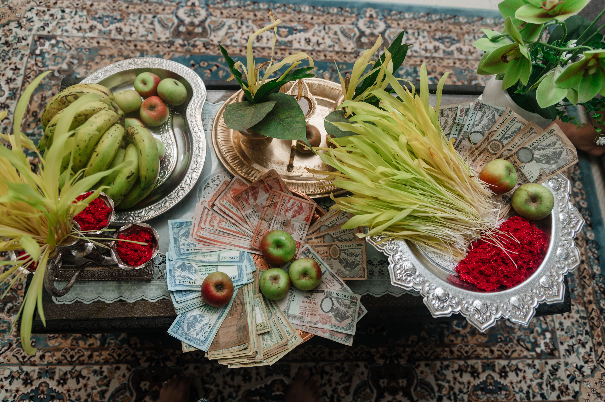
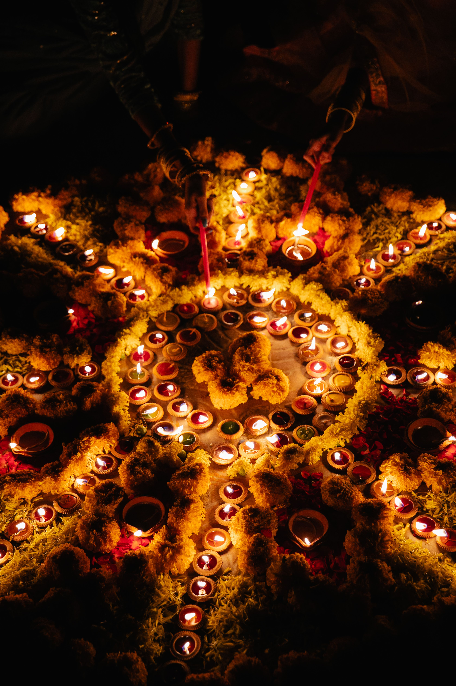
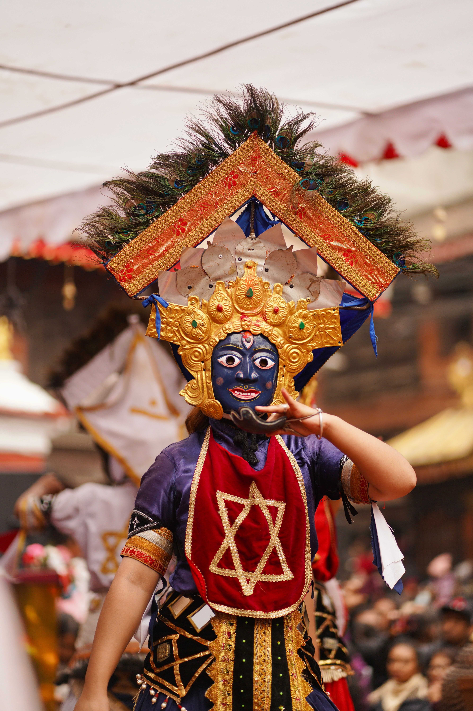
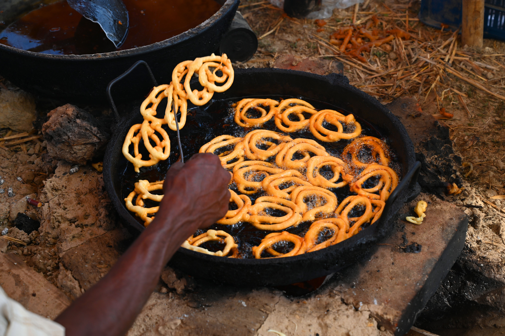
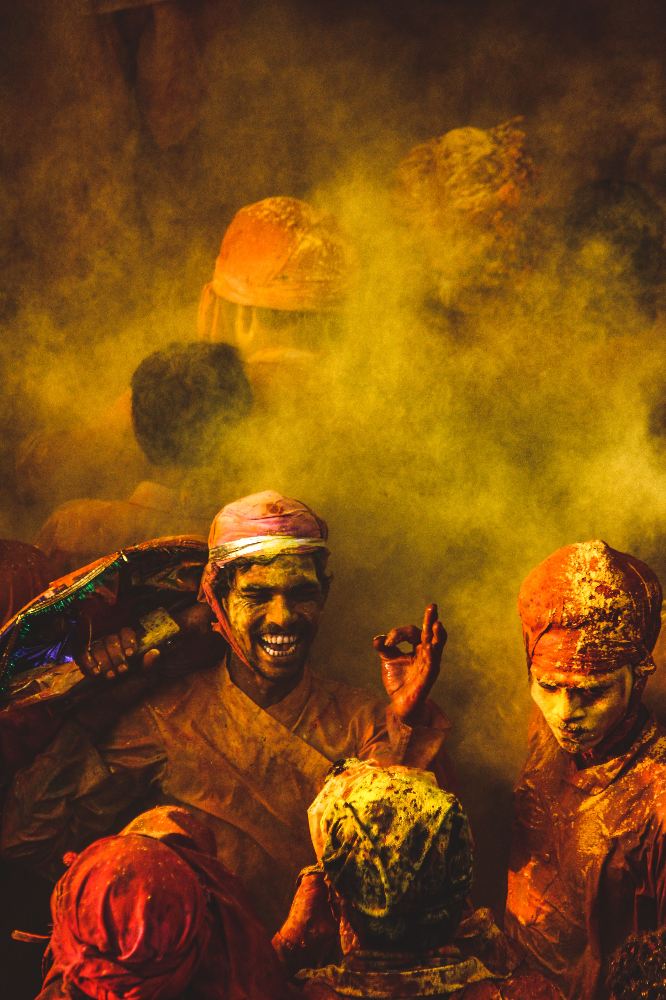
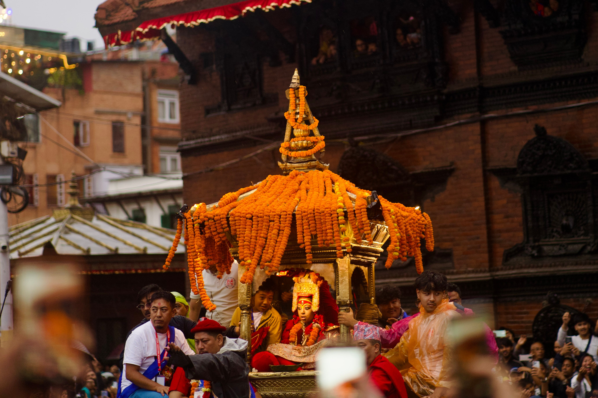

Dashain

Dashain is one of the biggest festivals in Nepal. Families gather to celebrate and receive blessings from elders.
Discover the rich traditions, festivals, food, and cultural heritage of Nepal.

Dashain is one of the biggest festivals in Nepal. Families gather to celebrate and receive blessings from elders.

Tihar is the festival of lights. People decorate their homes with colorful lights and flowers.

Nepal has many traditional dances that represent the culture of different communities.

Nepali food includes dal bhat, momo, selroti and many traditional dishes enjoyed across Nepal.

Holi is the festival of colors, celebrate with colorful powder, water, and joy.

Indra jjatra is a traditional newar festival celebrate in kathmandu with masked dances, chariot processions, and culture performance.